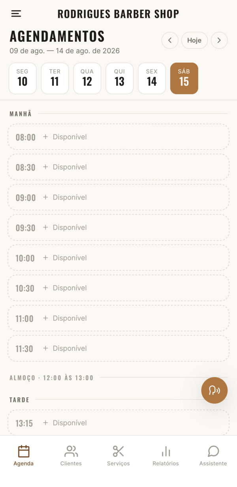
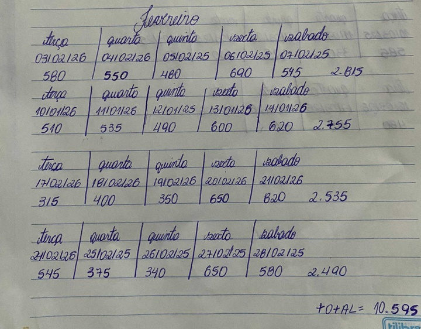
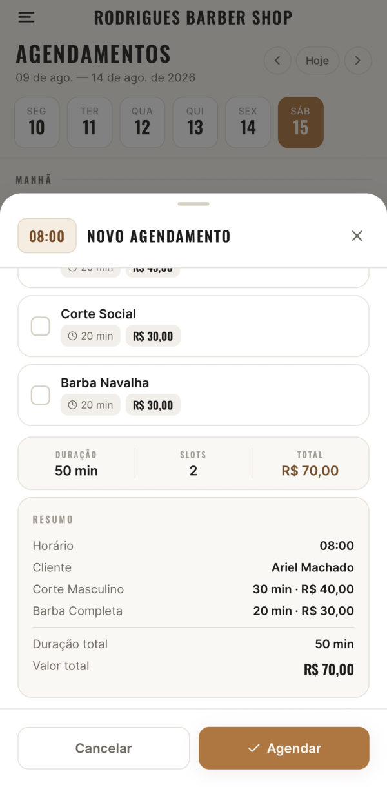
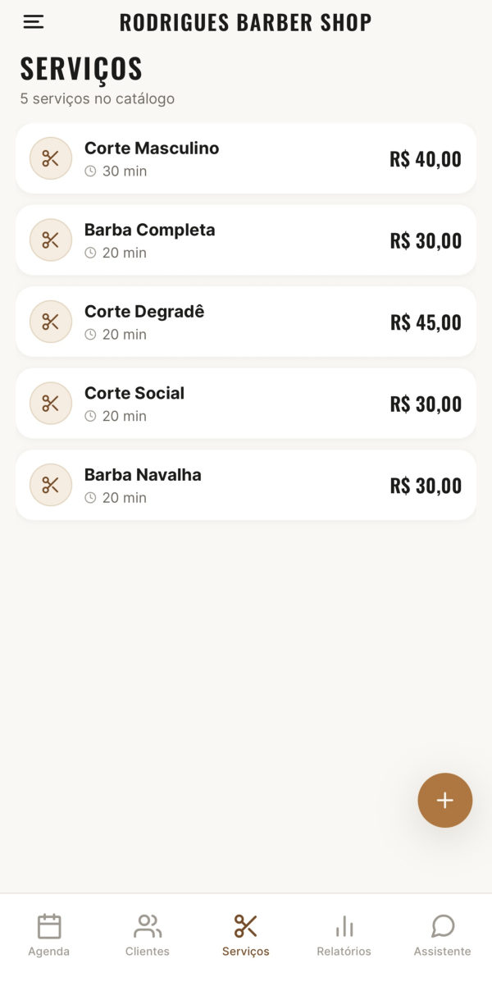
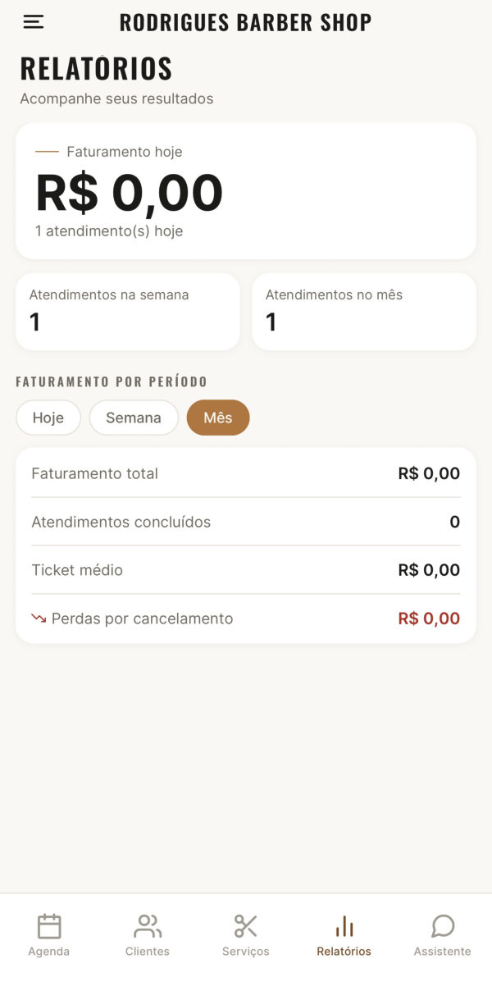
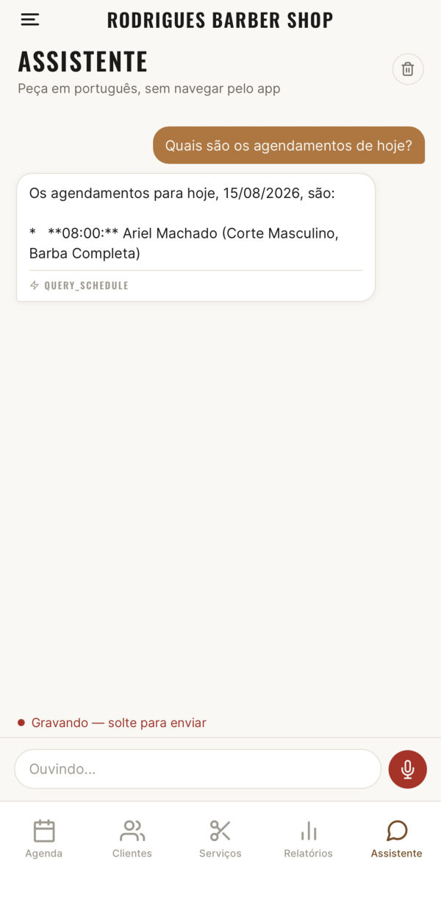

IFPR · Campus Paranavaí · Bacharelado em Engenharia de Software
Kroma
Sistema de gestão para barbearia com interface em linguagem natural

01 · Por que fazer
A barbearia era gerida no caderno e no WhatsApp

- Agendamentos de sexta e sábado anotados no bloco de notas do celular.
- Contato e histórico dos clientes só nas conversas do WhatsApp e do Instagram.
- Dois clientes marcados no mesmo horário cerca de cinco vezes, segundo o dono.
- O barbeiro trabalha sozinho, com as mãos ocupadas quase o dia todo, e só responde aos pedidos de horário no almoço ou ao fechar.
Por isso, além dos formulários, o sistema aceita pedidos por texto ou voz.
02 · Plano seguido
Pesquisa aplicada com estudo de caso único
Objetivo: desenvolver o sistema com o responsável pela barbearia e medir como ele se comporta no uso real, incluindo os comandos em linguagem natural.
-
Levantamento
Entrevista semiestruturada com 30 perguntas e observação da rotina do estabelecimento.
27 RF · 9 RNF · 22 RN
-
Modelagem
Casos de uso, diagrama de classes e modelo entidade-relacionamento. Backend em camadas, segundo a Clean Architecture.
4 camadas no backend
-
Construção incremental
Primeiro os cadastros, depois agendamentos e relatórios e, por último, o assistente em linguagem natural.
3 incrementos verificáveis
-
Avaliação
Testes automatizados, 5 dias de processo manual contra 5 dias com o app, comandos em uso real e ensaio controlado.
43 cenários × 3 execuções
03 · O que foi entregue
Aplicativo móvel e API com as regras do negócio



Tecnologias
- React Native
- NestJS
- TypeScript
- MySQL
- Prisma ORM
- JWT
- Jest
Regras aplicadas na API
- Atendimentos de segunda a sábado, das 8h às 12h e das 13h15 às 19h30.
- Nunca dois agendamentos no mesmo horário para o mesmo profissional.
- No máximo 7 dias de antecedência.
- Cancelamento com menos de 1 hora gera registro de cobrança.
- Três perfis de acesso: Admin, Supervisor e Barber.
04 · O que foi entregue
O assistente converte o pedido em uma chamada de função
- App. O usuário digita ou fala o pedido. O áudio é transcrito antes de seguir.
- API Kroma. Envia o texto e a declaração das 4 funções ao Gemini.
- Modelo. Escolhe a função e extrai os parâmetros, sem executar nada.
- Backend. Executa o caso de uso com as mesmas validações da API REST.
- Modelo. Redige a resposta que aparece no app.
- QUERY_SCHEDULEconsultar a agenda de um dia
- CREATE_APPOINTMENTcriar agendamento
- REGISTER_CLIENTcadastrar cliente
- GENERATE_REPORTgerar relatório

05 · Resultados
Escopo entregue e testado
Verificação técnica
Requisitos funcionais implementados
27 de 27
Conferidos contra a especificação validada com o dono.
Testes automatizados aprovados
127 de 127
108 unitários e 19 de integração no backend.
Cobertura de instruções em domínio e casos de uso
52,8%
78,3% nos arquivos com regras de negócio. Dias, horários e conflitos com 100%.
Uso real · 5 dias com caderno, 5 dias com o app
Tempo para registrar um agendamento
16,62 s
▼ 2,25 s a menos que no caderno (18,87 s), −11,9%
Agendamentos refeitos por troca de serviço
0 contra 2 no caderno
Sem conflito de horário nem perda de dados nos dois períodos.
Como ler esses números
Uma única rodada de cronometragem e volume de atendimentos não controlado. A comparação é exploratória.
06 · Resultados do assistente
O assistente acerta quando o Gemini responde
Uso real, comandos livres do dono
36 de 50
72,0% de sucesso. Nos 40 comandos em que o Gemini respondeu, 90,0%.
Destaques do ensaio controlado
- 92,7%de acerto quando o serviço respondeu
- 19 de 19violações de regra barradas
- 89 de 126certas e com resposta completa
Ensaio controlado: 42 cenários × 3 execuções = 126 execuções
- Comportamento esperado
- Erros de interpretação
- Falha do serviço externo
| Desfecho | Execuções | % |
|---|---|---|
| Comportamento esperado | 101 | 80,2 |
| Erros de interpretação | 8 | 6,3 |
| Agendou sem o serviço informado, presumindo “corte” | 3 | 2,4 |
| Leu “semana passada” diferente do critério | 3 | 2,4 |
| Data com pontuação indevida, rejeitada pela API | 2 | 1,6 |
| Falha do serviço externo antes da função | 17 | 13,5 |
| Total | 126 | 100,0 |
Em 12 das execuções certas, a segunda chamada ao modelo, que redige a resposta, expirou ou ficou indisponível. Nenhuma violação de regra gerou registro.
07 · Conclusão
O Kroma centralizou a gestão e o assistente funciona, com ressalvas
Entregue
- Clientes, serviços, agenda e relatórios em um único aplicativo.
- Operações por texto e voz que passam pelas mesmas regras do backend.
- Todos os requisitos funcionais e testes automatizados aprovados.
Limites
- Um usuário, um estabelecimento e um modelo gratuito.
- O dono achou os formulários mais práticos para agendar.
- Canal de voz fora do ensaio controlado e custo de adoção não medido.
Próximos passos
- Pedir o dado ausente e confirmar antes de gravar.
- Testar as regras ainda sem cobertura e avaliar a voz.
- Uso por mais tempo e comparação entre modelos.
Obrigado